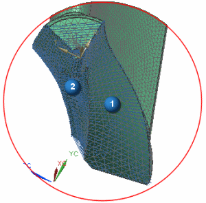

Determine the dependent side of the coupled constraint
The independent and dependent faces were determined when the 2D dependent mesh was created.
-
 is the independent face
is the independent face
-
 is the dependent face
is the dependent face
-
